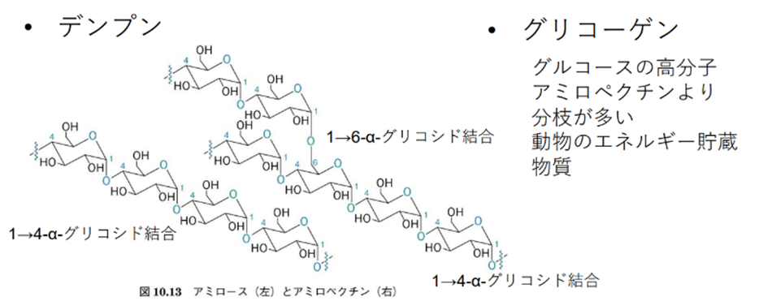

🔹炭水化物
炭水化物は自然界に最も多く存在する生体分子であり、地上のバイオマスの50%近くを占める物質群である。炭水化物は糖質とも呼ばれる。 炭水化物は緑色植物や藻類による光合成で合成される。光合成とは、太陽からの光エネルギーを用いて、二酸化炭素と水をグルコースと酸素に変換する反応である(図10.1)。体内でグルコースが代謝されると、二酸化炭素と水、そして大量のエネルギーが生み出される。このようにして、炭水化物(グルコースなど)は化学エネルギーの貯蔵庫としての働きを担っているのである。
🔹単糖
もっとも単純な炭水化物は単糖と呼ばれ、3～7個の炭素原子を持ち、鎖状構造のものは、末端炭素(C1)、またはその隣の炭素(C2)にカルボニル基(>C=O)が存在する。ほとんどの炭水化物では、残りの炭素原子にヒドロキシ基(-OH)が結合している。単糖の構造式は、カルボニル基を上限に置いて垂直に描かれる。C1炭素にカルボニル基をもつ場合はアルデヒドに分類され、アルドースという。C2炭素にカルボニル基をもつ場合はケトンに分類され、ケトースと呼ぶ。単糖を構成する炭素数に対応して、トリオ―ス(3炭素)、テトロース(4炭素)、ペントース(5炭素)そしてヘキトース(6炭素)などと呼ばれる。 6炭素からなるD-グルコースとD-フルクトースを例に説明しよう。 D-グルコースはアルデヒドをもつ単糖であるからアルドヘキソースである。 一方のD-フルクトースはC2炭素がカルボニルであるケトンなのでケトヘキソースとなる。これらの化合物は互いに構造異性体であることに注意してほしい。
ここで単糖の表示方法について説明しておこう。先にも述べたように、単糖はカルボニル基を上側において垂直に描かれる。カルボニル炭素以外の炭素原子はすべてsp3混成であることから四面体の構造である。これらの炭素原子から水平方向の結合は、紙面から手前に出ており(くさびで表記)、垂直方向の結合は奥側にあるものとみなす。この決まりをもとに、簡略化した形で表記する方法はフィッシャー投影法と呼ばれ、十文字で書き表される。
アルドヘキソースには四つの立体中心が存在するので、24=16種類の立体異性体、つまり8組の鏡像異性体が存在する。ケトヘキソースには三つの立体中心が存在するので23=8種類の立体異性体、すなわち4組の鏡像異性体が存在する。立体中心の立体配置を表す接頭語としてR/S表示法が用いられることはすでに述べた。単糖の場合もR/S表示法が用いられるが、D/L表示法も用いられる。このD/L表示法は、カルボニル基から最も離れた立体中心に結合したOH基がフィッシャー投影式で右側に存在する糖をD体、左側に存在する糖をL体とするものである。天然の糖はすべてD体であるので、このR/S表示法炭素の立体中心はR配置をもつことになる。
単糖は一般に甘みを有しており、融点の高い極性化合物である。水素結合が可能なヒドロキシ基を有しているため水溶性である。一方で、多くの有機化合物とは異なり、有機溶媒には不溶であるという性質をもっている。
単糖の構造式は複数のヒドロキシ基をもつ非環状カルボニル化合物として描かれるが、カルボニル基は分子内に存在するヒドロキシ基(アルコールとみなすことができる)と反応して、ヘミアセタールと呼ばれる6員環あるいは5員環化合物になる。これらを環状ヘミアセタールと呼ぶ。この環状化合物は酸素原子を１つ含み、6員環をピラノース環、5員環をフラノース環と呼ぶ。環状生成物が形成されると、ヘミアセタール炭素(カルボニル炭素)はアノマー炭素と呼ばれ、新しい立体中心となる。すなわち、二種類の立体異性体が生成することになり、これらの異性体をアノマーと呼ぶ。アルドヘキソースであるグルコースでは、通常6員環であるピラノース環を形成する。D-グルコースからの環状ヘミアセタールの生成についてみていくことにしよう。

D-グルコースのカルボニル基から最も離れた立体中心(C5)に直接結合しているヒドロキシ基の酸素原子は、カルボニル炭素から数えて6番目の原子であり、環化によってピラノース環(6員環)を形成するために適切な位置にある。非環状グルコースを環状ヘミアセタールに変換するために環化の前段階の小周防に描き直そう(図10.5)。すなわち、C5炭素を中心に回転したあと折り曲げることで、環化前の非環状グルコースを描くことができる。ここでピラノース環の酸素原子は6員環の右端の角を占めるように描かれるため、上図に示すような構造として描いた。
環状ヘミアセタールの生成に伴い、新しい立体中心ができるため、αアノマーとβアノマーの二つの環構造が存在する(図10.6)。αアノマーでは新しく生成するOH基は下側、すなわちC5に結合している。CH2OH基とはシスの関係になる。一方、βアノマーのＯＨ基は上側に位置し、C5のCH2OH基とはシスの関係になる。生成したD-グルコースのαアノマーをα-D-グルコース、または6員環構造を強調するためにα-D-グルコピラノースと呼ぶ。βアノマーも同様に命名される。αアノマーとβアノマーは、アノマー炭素の立体配置のみが異なる異性体であることからジアステレオマーであることに注意されたい。
非環状グルコース(アルデヒド体)と二つの環状ヘミアセタールは、それぞれ別々に結晶化することにより単離できる。しかし、いずれの化合物も溶液状態にすると平衡になり、37%のαアノマーと63%のβアノマー、そしてごく微量の非環状グルコースとして存在する。この現象を変旋光という。
二つの環状グルコース(ヘミアセタール)は6員環構造を有している。より実際に近い三次元構造である いす形構造に書き直したものが図10.7である。βアノマーに注目すると、すべての水素原子はアキシアル位にあり、水素原子より大きな置換基のすべては空間的に広いエクアトリアル位を占めた安定な構造をとっている。一方、αアノマーは、アノマー炭素に結合したOH基がアキシアル位を占めることで立体反発が存在する。すなわち、βアノマーに比べαアノマーは安定性が低いことから、先に示した平衡での存在比(αアノマー 37:βアノマー 63)になるのである。
単糖をメタノール(CH3OH)と塩酸で処理すると、グリコシドと呼ばれるアセタールに変換される。すなわち、アノマー炭素に結合していたOH基がOCH3基に変換された化合物が生成する。生成するグリコシドは二種類の異性体(ジオステレオマー)、α-グリコシドとβ-グリコシドである(図10.8)。
環状ヘミアセタールは結合の開裂と再結合を伴う平衡(αアノマーとβアノマーの生成)が存在するのに対し、グリコシド(アセタール)は、単に溶液状態にしただけでは異性化は起こらない。すなわち、α-グリコシドとβ-グリコシド間に平衡は存在しない。グリコシド結合でつながった二糖や多糖は、この結合様式の違いにより異なる性質を示す。次に二糖について見ていくことにしよう。
🔹二糖
二つの単糖がグリコシド結合でつながった糖を二糖という。最も豊富に存在する二糖にはマルトース、ラクトース、そしてスクロースがある。これらの二糖について説明していこう。
マルトースは麦芽糖とも呼ばれ、デンプンの加水分解により得られる二糖であり、発芽した大麦などの穀類に含まれる。マルトースは二つのグルコース単位からなり、1→4-α-グリコシド結合により互いにつながっている(図10.9)。マルトースはアセタール炭素とヘミアセタール炭素を含んでいるため、加水分解により生成するグルコースはアノマー混合物となる。
ラクトースは乳糖とも呼ばれ、人や牛の乳に含まれる主要な二糖である。他の単糖や二糖とは異なり、ラクトースはそれほど甘みはない。ラクトースはガラクトース1分子とグルコース1分子からなり、ガラクトースのアノマー炭素からグルコースのC4炭素への1→4→β-グリコシド結合によってつながっている。
スクロースはショ糖とも呼ばれ、サトウキビやテンサイなどにも含まれる二糖であり、白砂糖として使われている。天然で最も一般的な二糖であり、グルコース1分子とフルクトース1分子からなる。ここでフルクトースは5員環構造を有しており、C2の炭素でグルコースとα-グリコシド結合している(図10.11左)。スクロースは心地よい甘味を有する化合物であることから多くの商品に使われている。しかし炭水化物であるスクロースはカロリーが高い。そこで、充分な甘みをもち、カロリーの低い人工甘味料が開発されている。その一つにアスパルテームがある。(図10.11右)アスパルテームはショ糖の100~200倍の甘みをもつ物質である。
🔹多糖
三つ以上の単糖が互いにつながった物質を多糖といい、セルロース、デンプン、グリコーゲンの三つが天然に広く存在している。いずれの多糖も、異なるグリコシド結合でつながったグルコース単位の繰り返しからなる。
セルロースはほとんどすべての植物の細胞壁に見られる。綿はほぼ純粋なセルロースである。セルロースは、グルコースが1→4-β-グリコシド結合で繰り返しつながった枝分かれのない高分子である(図10.12)。そのため、セルロースは長い直線的な鎖となり、それがシート状に積み重なることにより三次元的に広がっており、鎖やシートの間には分子間での水素結合により網目構造が形成されている。セルロースは高い極性をもつ化合物であるが水に不溶である。
トウモロコシ、米、麦、芋などに含まれているデンプンは、グルコースがα-グリコシド結合でつながった高分子化合物であり、アミロースとアミロペクチンと呼ばれる二つの化合物がよく知られている。
デンプンの約20%を占めているアミロースは、グルコースが分岐することなく1→4-α-グリコシド結合で直線的につながった高分子である。アミロペクチンはデンプンの約80%を占めており、1→4-α-グリコシド結合で高分子の主鎖を形成し、1→6-α-グリコシド結合で分岐構造を形成している。デンプンは水分子と容易に水素結合することができるため、セルロースに比べて水溶性が高い。
グリコーゲンは動物においてエネルギー貯蔵物質として機能する多糖である。主に肝臓と筋肉に蓄えられ、細胞がエネルギーとしてグルコースを必要とするとき、グリコーゲンからグリコ―スが加水分解され、エネルギーを放出しつつ代謝される。